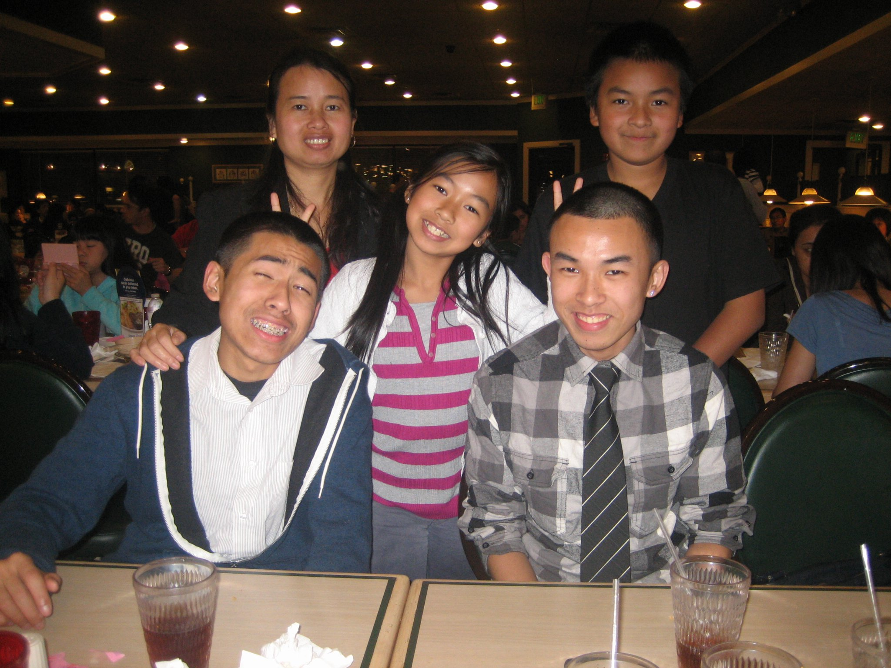
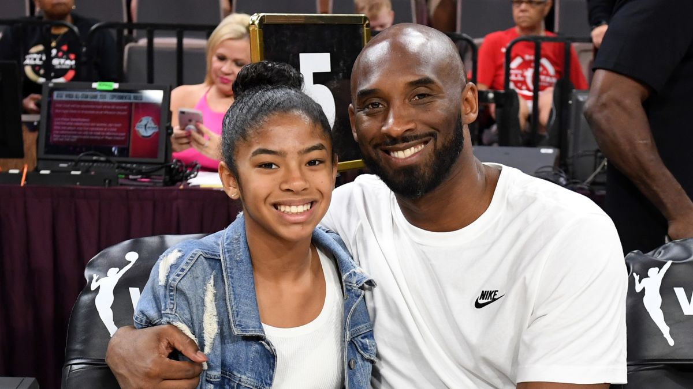

This is ME.
Born and raised in Los Angeles, California. However, my roots are tied thousands of miles away in the country of China and Vietnam. I grew up speaking fluent English and a lick of Chinese. My parents worked hard for what they had and continued working hard to feed a family with four kids.
As a pubescent teen, maturing and adulting was not easy to learn. My older brother was, and is continually, developing into a beautiful and supportive father figure that we continue to lean on. He would attend high school and work on the weekends to make some sort of income for himself instead of asking my mom for allowance. (We never got any to begin with.)
As I continued to age, the world became much more apparent to me. I was able to see how much my mother sacrificed to put a roof over my head. I was able to see how much my brother sacrificed to put food on my plate. I was able to see what true love looked like.
My family were never really expressive with each other but the love and support for each other doesn't need to be said or heard. This realization led me to become the person I am today. As like other humans, I have my flaws, yet I love embracing my flaws and turning them into strengths.
I always had a strong math background since I was young. I was in a math tournament in elementary school and I happened to win second place.(Luck had no part in this) Computation was always easy for me so I decided to switch to a math major my second year. However, the transition was not easy. As one might ask, what can you do with a math degree? What careers are there for math majors? I happened to ask myself the same thing.
I guess that brings us to now. I am currently taking a break from college to explore the exciting and complex nature of web development. I began this journey because plenty of my friends have started their careers in computer science and have told me, with my math background, why not try it?

I've explored into the first level of web development. (I'd like to say thats where I am at) Now I feel like I have a complete understanding of how important it is to continue learning and cotinually develop my skillset as well as develop my personality. I am more than hungry every day to continue to work, continue to learn, and create something out of nothing with the help of programming.
I do not have the words to describe how thankful I am to my family and friends who continue to support me on this journey. I have every intention to continue web development and also programming until I am successful. I owe it to everyone to has been around me, thick and thin. The beginning of my life has just started